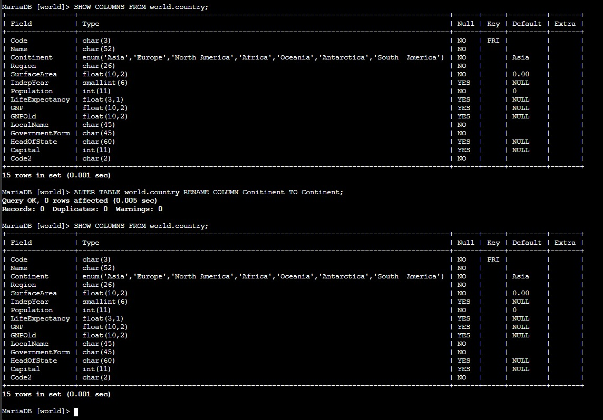
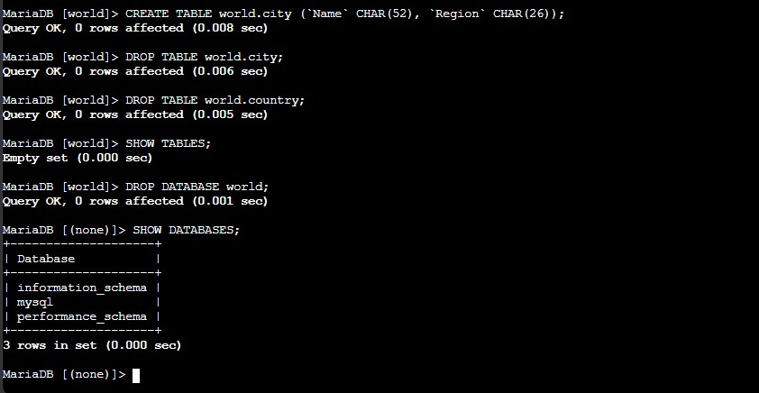

Connection Setup
Opened the Command Host, switched to the required user context, and connected to MariaDB from the terminal.
This lab practices SQL structure management from the terminal. Using a MariaDB session opened on the Command Host, the workflow creates a database, defines tables, corrects a schema mistake, and then removes the temporary objects again.
Connected to the Command Host through Session Manager, opened a MariaDB shell, created the world database, defined the country table, corrected the misspelled Conitinent column, created a second table for the challenge, and finally dropped the temporary tables and database.
Opened the Command Host, switched to the required user context, and connected to MariaDB from the terminal.
Created a new database and tables, then inspected the resulting structure to confirm the columns and keys.
Dropped the temporary tables and the world database, then verified that only the default schemas remained available.
The lab focused on database definition language operations, starting from a new schema and ending with a controlled cleanup.
sudo su and cd /home/ec2-user/ to work with the required permissions and paths.mysql -u root --password='re:St@rt!9'.SHOW DATABASES; and then created a new database with CREATE DATABASE world;.world.country table with its full schema, including the Code primary key and the geographic columns used later in the course.USE world;, confirmed the table with SHOW TABLES;, and inspected the schema using SHOW COLUMNS FROM world.country;.Conitinent, then corrected it with ALTER TABLE world.country RENAME COLUMN Conitinent TO Continent;.
country table initially shows the misspelled Conitinent column, then the schema is checked again after the rename to confirm Continent.world.city with two character columns: Name and Region.city table and then dropped world.country with separate DROP TABLE statements.SHOW TABLES; to confirm the database was empty before removing the full schema with DROP DATABASE world;.SHOW DATABASES; to verify that only the default schemas remained available.
city and country tables are dropped, SHOW TABLES; returns an empty set, and DROP DATABASE world; removes the schema completely.DROP TABLE and DROP DATABASE remove structure, not only data. Without a backup, those objects cannot be recovered automatically.Main commands and SQL statements used to build, inspect, modify, and remove the schema.
mysql -u root --password='re:St@rt!9'Opens the MariaDB command-line client with the root account configured for the lab.
SHOW DATABASES;Lists the schemas currently available on the server.
CREATE DATABASE world;Creates a new database named world.
SHOW COLUMNS FROM world.country;Displays the table structure, including column names, data types, keys, and defaults.
ALTER TABLE world.country RENAME COLUMN Conitinent TO Continent;Renames the misspelled column without recreating the full table.
DROP TABLE world.country;Deletes the table definition and all rows stored in it.
DROP DATABASE world;Removes the database and every object still contained inside it.
CREATE defines new schemas and tables, while DROP removes them completely.SHOW DATABASES, SHOW TABLES, and SHOW COLUMNS are the fastest way to confirm the current structure before and after a change.ALTER TABLE can correct schema mistakes without rebuilding the whole table from scratch.This lab was focused on structure rather than row data. The main lesson was that database work is not only about storing values, but also about defining the shape of the information correctly.
The verification steps mattered as much as the creation steps. By checking the schema before and after each change, it became easy to confirm that the table definition matched the intended design and that the cleanup really returned the environment to its initial state.